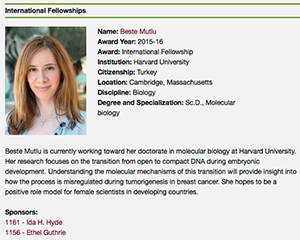

News Archives : 2015 : Beste Mutlu Wins AAUW's International Fellowship
by Mary Parker
August 7, 2015
Beste Mutlu, a third year graduate student in Susan Mango's lab, has earned a one-year research fellowship from the American Association of University Women (AAUW). The AAUW's International Fellowships are awarded to foreign women students who are studying in the U.S., and who have shown commitment to the advancement of women and girls in science. Mutlu’s application described her research on the re-organization of the nucleus during embryogenesis as well as her extracurricular work on behalf of women in science.
For the 2015–16 academic year, AAUW awarded a total of $3.7 million through six fellowships and grants programs to 241 scholars, research projects, and programs promoting education and equity for women and girls. The first AAUW International Fellowship was awarded in 1917. AAUW is one of the world’s leading supporters of graduate women’s education, having awarded more than $100 million in fellowships, grants, and awards to 12,000 women from more than 140 countries since 1888. The AAUW Fellowships and Grants program is one of the oldest and largest in the world exclusively for women.
Mutlu, a native of Turkey, explained in her personal statement to the AAUW committee how her parents influenced her feminist perspective by demonstrating equality and mutual respect at home, and how her early schooling taught her about the history of progress for women's rights in Turkey. However, she began to realize that governmental shifts away from a secular republic had created a hostile social environment for women, and that existing curricula discouraged critical thinking in early education. While attending college at Sabanci University in Istanbul, Mutlu participated in the Read-Think-Share project for underprivileged primary students to promote critical reading. She also worked for her university's peer tutoring program for math and science, which promoted critical thinking through discussion groups and seminars.
“Beste is a terrific graduate student. She has a passion for research and in thinking about how the cell works, and she is also an excellent teacher,” Mango said. “The AAUW is an organization aimed at empowering women and Beste will do just that, both as an example to young women interested in biology and by mentoring students.”
“We’re so proud to be supporting these fantastic women scholars to study abroad in the United States,” said Gloria Blackwell, AAUW vice president of fellowships, grants, and global programs. “AAUW’s International Fellows go back to their home countries and do important work in their local communities. They are an integral part of a great legacy to promote equality for women and girls across the globe.”
Mutlu has continued mentoring through her work as a teaching fellow and by joining the Women in Science, Technology, Engineering and Mathematics (WISTEM) mentoring program. She plans to continue her research in the U.S., but hopes someday to use her experience to develop curricula and mentor future science students in Turkey.
“I feel deeply humbled and honored to join the AAUW community.” Mutlu said. “I think every woman who is working hard for their goals contributes to breaking barriers for other women, and I hope that I’m one of them.”
